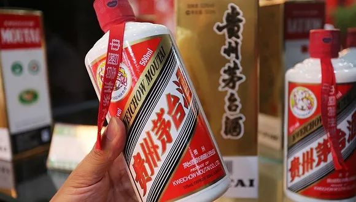

全民宅家，疫情如何影响中国食品饮料消费市场？
原文链接 备份链接 文 | 李湛 蔡娜 2003年的非典疫情影响周期超过半年，期间抑制消费，中国第三产业GDP受波及影响长达两个季度。另一方面，非典疫情影响社会消费数据仅是短期性，待疫情控制后迅速回升。 此次新冠疫情发生于春节旺季，短期 …

图片来源：图虫创意
记者：吴容 编辑：牙韩翔
“
春节原本是茅台酒的销售旺季，突如其来的疫情让白酒市场颇为“受伤”。眼看着飞天茅台降温，最慌的恐怕是年前入手囤积茅台的黄牛们。
”
“有N95口罩吗？我拿飞天茅台换。”
在白酒爱好者聚集的“酱香白酒”百度贴吧，几个网友一来一回计算着怎么交换才合理，由于物流不畅，这项交易最终没有达成。
春节原本是茅台酒的销售旺季，突如其来的疫情让白酒市场颇为“受伤”。茅台酒价格回落已是不争的事实，53度飞天的市场流通价从春节前的2500多元/瓶，跌至2月初的2200-2400元/瓶，来到2月中旬还曾跌破过2000元/瓶。
眼看着飞天茅台降温，最慌的恐怕是年前入手囤积茅台的黄牛们。在一些倒卖茅台的交流群，也上演了类似用茅台换口罩的场景。

图片来源：百度贴吧
李子峰是一名江苏镇江的茅台黄牛。最近一个月，每天起床后除了关注疫情进展，他便一直盯着手机屏幕观察茅台酒的价格变动。由于春节前过于自信的“押宝”行为，他现在遭遇现金流告急。
“简单来说，就是之前赚的钱都变成货了，但现在货无法变现。”去年春节，秉持着快进快出兑换成钱才是硬道理的做法，李子峰小赚了一笔。今年他试图效仿，开了几张信用卡囤了300件（箱）飞天茅台，不料疫情来袭近300万元被套牢。
大年三十之后，李子峰的货源就再未有过外销记录，眼下即便想低价甩货，也很不容易。

比起单瓶的茅台酒，整箱的包装会获得更多的“溢价”。图片来源：百度贴吧
李子峰打出“整件价格美丽”的小广告，在几个交流群问了一圈，迟迟未等到“拆迁户”露脸。在交流群里，“财大气粗”的下游买家往往被称为“拆迁户”，“他们不收，有什么办法呢？大家都在观望。即使有人收，也很少的（散瓶）而已。”李子峰说。
像李子峰这样操作的，被认为是新手黄牛的“玩法”。
王俊豪在江苏无锡从事白酒经销生意，偶尔也倒卖茅台酒。他对界面新闻表示，按照“行规”，茅台黄牛党一般被划分成了“大牛”和“小牛”，他们玩法不同，受到疫情冲击也有明显差异。
“小牛”也被称为散牛，通常来说是新手。按照王俊豪的说法，飞天茅台市场指导价1499元/瓶，自筹资金加贷款砸下1000万入场也并不算多。为此，散牛们习惯快进快出。不过风险极高，一旦遇到断崖式的跌价很可能就淘汰出局。


在贵州景区和机场排队等待“撸”茅台的黄牛们。图片来源：腾讯
而所谓的“大牛”，往往从事白酒业务相关，包括白酒经销商、白酒商行的老板等。“近年来茅台热度和价格上升，一些地级市的酒行老板转型专做茅台黄牛，一般投入在3000万-5000万元。近20人的团队分工明确，有人集资，有人负责扫货，还有的负责出货。”王俊豪说。
懂得控制好自有资金的比例，也摸得准市场行情，大黄牛们通常抵御风险能力较好。
根据王俊豪的观察，如果手头有两千万现金，大黄牛一般会拿出50%入场，再加上银行借款。剩余的一千万现金用来防范风险。“炒茅台和炒股票本质上没有什么不同。一旦遇到像疫情等不可抗力因素出现爆仓，手头上还留有现金用来还银行贷款和支付员工工资。”王俊豪说。
去年中秋国庆期间，在茅台的直营化策略下，商超、电商等渠道投放加大，茅台酒价格就曾出现过一波震荡，黄牛们纷纷选择抛货。为了持续严格控价和打击市场囤货，今年年初茅台不断加大直营力度，陆续和几十家区域商超卖场进行签约。

去年9月，茅台在上海costco进行了投放，随即引发哄抢，其中不乏黄牛的身影。图片来源：视觉中国
年前商超渠道的大规模放量，在一定程度上抑制了炒酒的需求。部分嗅到了一丝不安的大黄牛，已选择在过年前高位出货，开年休生养息并观望，年后再寻找合适的时间点和价格切入。
“所以，他们现在手中并没太多的存货。但这样的（大黄牛）毕竟极少数，大部分的炒客仍在焦灼之中。”王俊豪说。
随着茅台集团在2月13日正式复工复产，2020年的茅台产销工作也拉开帷幕。疫情之下，茅台集团董事长李保芳表示，茅台2020年“计划不变，任务不减，指标不调，员工收入不降”。
此外，茅台今年也将会延续加大直营力度、严格控价这一做法。即便没有疫情带来的危机，对黄牛们来说也显然不是什么好消息。
界面新闻留意到，从2月23日开始，贵阳、遵义的部分茅台直营店陆续开门营业；商超卖场方面，从2月26日起，包括辽宁大商、物美旗下新百和多点等也开启茅台预售活动；在线上渠道，苏宁易购最新一期的预约时间为27-29日，抢购时间为3月1日。
2月初，一些扛不住压力的茅台黄牛已开始另谋出路。李子峰微信朋友圈观察到，这些黄牛大多转向了和疫情相关的业务。
“我看他们，有的开卖口罩、消毒液和洗手液；有的拿到生鲜电商的折扣券，和卖菜差不多；还有的熟悉酒圈资源，很容易拿到医用酒精；还有的人撸高度数的小酒来卖。”李子峰说。
目前他仍在观望，如果疫情还将持续一段时间，他也打算“转行”，“现在苦也得憋着，交学费了，世上哪有稳赚不赔的生意。”
（应受访者要求，“李子峰”“王俊豪”为化名）
未经授权 禁止转载

原文链接 备份链接 文 | 李湛 蔡娜 2003年的非典疫情影响周期超过半年，期间抑制消费，中国第三产业GDP受波及影响长达两个季度。另一方面，非典疫情影响社会消费数据仅是短期性，待疫情控制后迅速回升。 此次新冠疫情发生于春节旺季，短期 …
原文链接 备份链接 来源：雪球App，作者： 腾讯棱镜深网，（https://xueqiu.com/6718098612/141480733） @今日话题 作者 | 孙宏超 相欣 编辑 | 康晓 出品｜深网·腾讯小满工作室 编者按：通过中 …
原文链接 备份链接 来源：八合里微博 记者 | 卢奕贝 编辑 |牙韩翔 “ 受到新型冠状病毒肺炎疫情的影响，通常需要排队2-3个小时的网红火锅店，如今也到了捉襟见肘的地步。 ” 1月25日，大年初一，汕头八合里海记牛肉火锅（下称“八合 …
原文链接 备份链接 以外来人员就业为主的地区应延迟复工，以本地人员就业为主的地区应视优先复工；适当延迟劳动密集型行业复工，优先放宽非劳动密集型行业复工；重点保障疫情防控必需、城市运行必需、群众生活必需的行业复工 *********** …
原文链接 备份链接 编者按：这篇文章的作者是我们之前 这篇故事 的主人公，媒体人嘉秋。他现在还在隔离期，前两天有点感冒发热，还好是虚惊一场。作为一名主动上报的潜在 “病毒接触者”，在北京做居家隔离是什么样的体验？我们请嘉秋记录了下来。 两 …